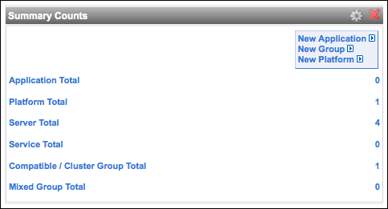
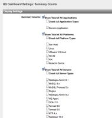
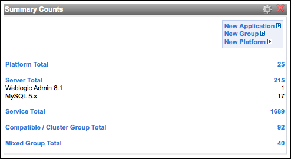

Hyperic 4.5 Documentation : ui-Dashboard.Summary
This page last changed on Sep 27, 2010 by mmcgarry.
Topics marked with * relate to HQ Enterprise-only features.
About the Summary Counts Portlet
The Summary Counts portlet on the HQ Dashboard shows resource counts by inventory type, and if configured to do so, counts for selected resource types. (For information about inventory and resource types, see HQ Inventory Model). By default, the Summary Counts portlet shows the total resources of each inventory type — Application, Platform, Server, Service, Compatible Group, and Mixed Group — as shown in the screenshot below.

Configure the Summary Counts Portlet
To tailor the content of the Summary Counts portlet:
- Click
 in the upper right corner of the portlet.
in the upper right corner of the portlet. - The HQ Dashboard Settings: Summary Counts page appears. The thumbnail below is a screenshot of the top part of the page.
 - To exclude the count for a particular inventory type, (for instance, Applications) uncheck the "Show Total of All ..." checkbox for the inventory type.
- To show the count of resources of particular resource types, (for instance, WebLogic Admin 8.1 and MySQL 5.x), check the box next those resource types.
- Click OK.
- The screenshot below shows the Summary Counts portlet configured to exclude the count of applications, and to include counts for two server types: WebLogic Admin 8.1 and MySQL 5.x

- The screenshot below shows the Summary Counts portlet configured to exclude the count of applications, and to include counts for two server types: WebLogic Admin 8.1 and MySQL 5.x
{kind=link}
{kind=link}
{kind=link}